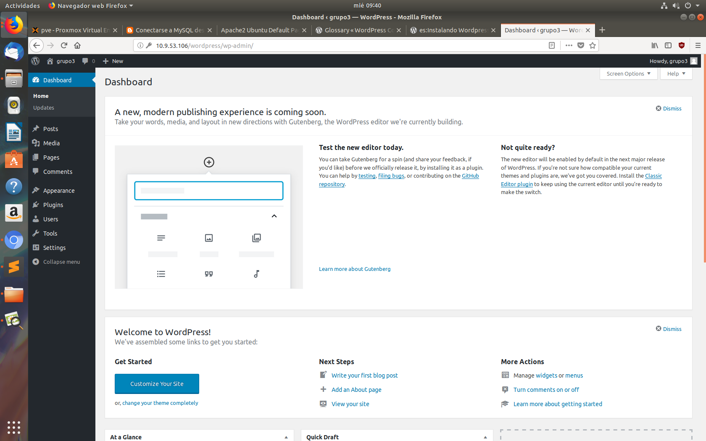

Copiar archivos de la raíz de Documentación de nuestro servidor web
Para transferir los archivo
# sudo cp -r ~/wordpress/* /var/www/html/
Nos moveremos hacia dentro de la raíz
# cd /var/www/html
Antes, creamos directios de uploads, tras directorio wp-content
# mkdir /var/www/html/wp-content/uploads
Damos permisos para alojar los ficheros que subamos
# sudo chmod-R /var/www/html/wp-content/uploads
Completa la instalación a través de la interfaz web
En tu navegador web, dirígite a la URL de tu servidor web:
10.9.53.106
Página inicial de configuración
Rellenados los campos necesarios, veremos la interfaz de WordPress y podrás comenzar a montar tu web o blog
